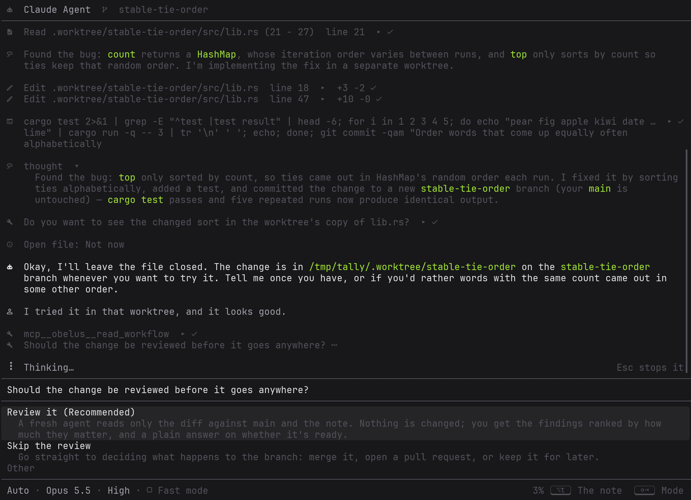
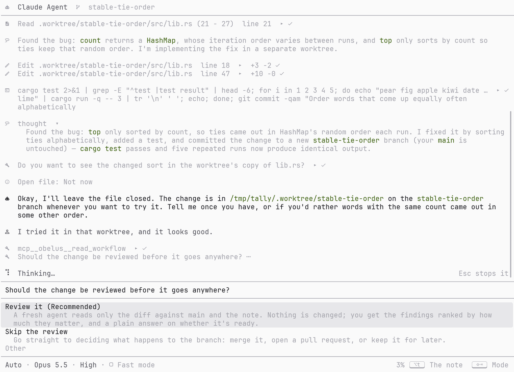
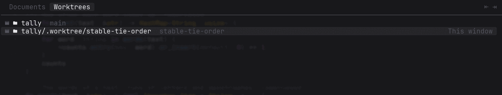
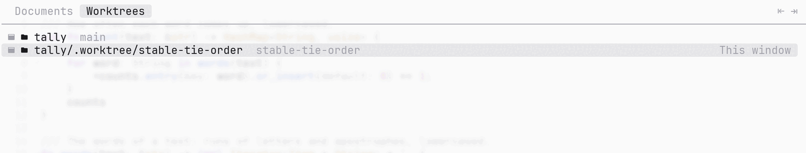
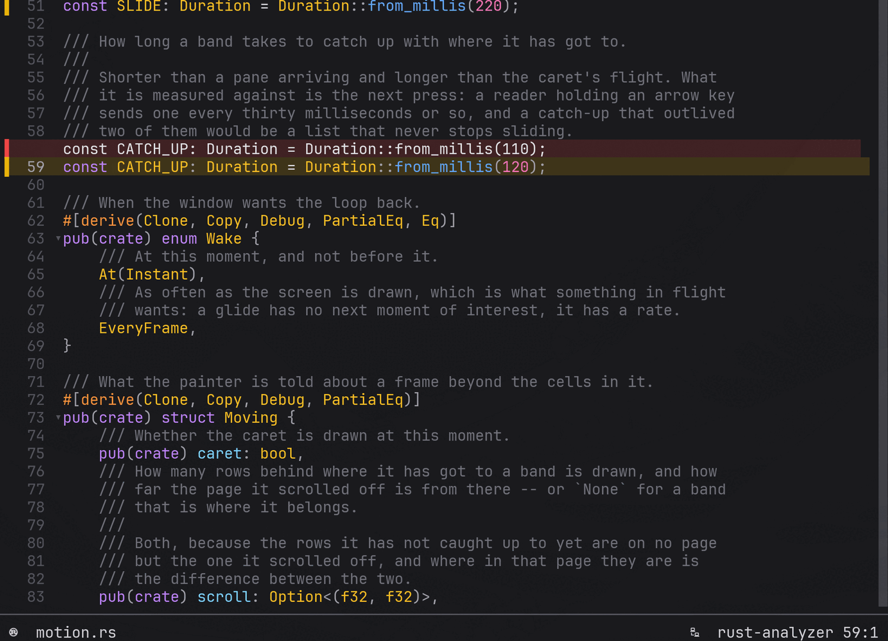
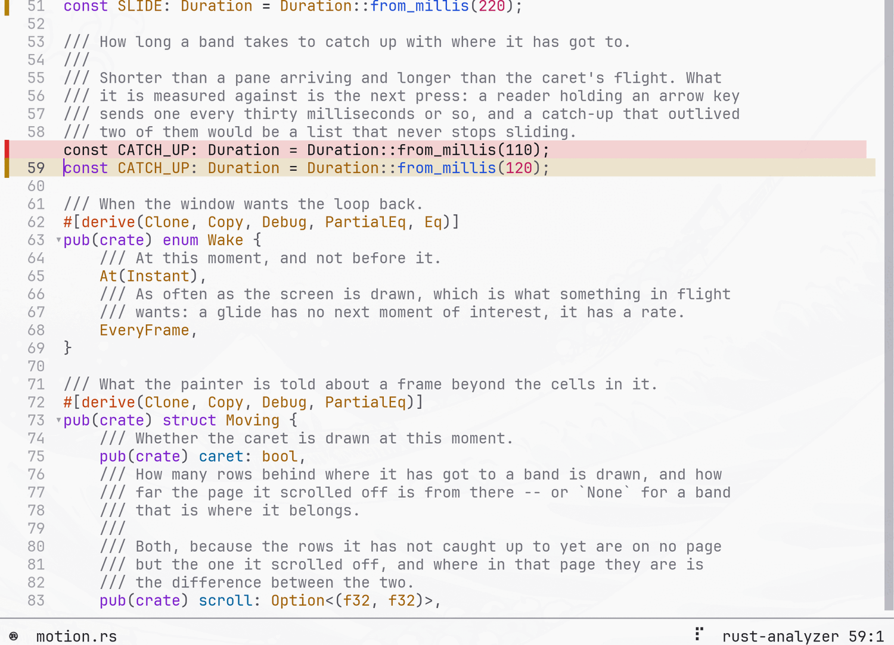

Obelus
不求强大，只求顺手。agent 就在里面。
Obelus 是一个代码编辑器，在它自己的窗口里，或者在终端里。它不追求强大——没有多光标、没有宏那一套——而是合我自己的习惯：打开就能读，方向键就是方向键。agent 也是它的一部分：它在自己的分支上改代码，你读它改了什么，你不点头，什么都不会离开那个分支。obelus（÷、†）是古代学者在手稿边上标记「此处存疑」的记号。


feature-branch 真跑一遍的样子，项目是编的。标题行写着改动在哪个分支上。agent 开好 worktree、改之前和改之后各跑了一遍测试、在那里提交，说清楚改动在哪，然后就等着；直到被告知试过了，它才问要不要审——用卡片问，而不是写在回复里。01几个亮点
02我怎么用它
我经常同时推进好几个项目，同一个仓库也开着好几个 worktree，每个里面都有一个 agent 在做一部分事。Obelus 就是为这样的一天做的：一条笔记——一行存疑的代码，或者只是接下来想做的事——变成一个已经合进去的改动，中间我正在读的那份 checkout 一直没动过，我也没敲过一条 git 命令。本页最上面那一屏，就是这样一天里的某一刻。
-
01
从一条笔记开始。
有时是一行存疑的代码：在那一行上按 Alt+t，写一句话。也常常是一个不对着哪一行的计划：命令面板里的
todo，写下接下来想做的事——这一节本身就是从这样一条笔记开始的。不管哪种，它都进了这个项目的笔记，同一个仓库的每个 worktree 看到的都是这一份；对着某一行写的，文件再怎么改也还指着那一行。 -
02
和 agent 把它聊清楚。
在笔记页里，任何一条上按 Alt+a，都会开一段关于它的对话，agent 会被告知笔记写的是什么。我们一起想要做成它需要什么，我同意的步骤写在这条笔记底下。
-
03
它在自己的分支上改代码。
动手之前，它开一个 worktree，分支按这次改动起名——放在
.worktree/底下，这个 workflow 新开的树都放在那里——先让它能编译、把测试跑一遍，这样之后测试挂了，就知道是这次改动的事。我正在读的那份 checkout 不动；对话的标题行写着改动在哪个分支上。 -
04
它告诉我去哪试，我就过去。
改完它会再跑一遍测试，告诉我目录和分支、跑了什么、结果是什么——而不是「应该没问题」——然后等我试过再说。F2 再按 Tab 就是这个仓库的所有 worktree：选中那一个，开着它的窗口就会跳到前面来，没开就新开一个；在那边，这次改动就是这个分支上最新的那个提交——在它写的某一行上按 F11，就打开那个提交，标着它比上一个提交改了什么。
-
05
我没点头，什么都不会离开那个分支。
我告诉它试过了、满意了，它才问要不要审一遍——能开一个干净的上下文就开，只给它 diff、这次改动为了什么、以及那条笔记——再把发现的问题按轻重列出来，让我勾要修哪些。然后问这次改动怎么回去：直接合并，开 pull request，还是先留在分支上以后再说。
-
06
pull request 它跟到底。
它用
gh开 PR，盯着 checks，哪个挂了说清楚为什么，我同意就回 worktree 里修，全过了再合并。机器上没装gh或者没登录，它就把分支推上去、把链接交给我，并说明剩下的归我。 -
07
最后收拾干净，也是问过再做。
合进去以后：我的 checkout 正好在它合进去的那个分支上的话，要不要跟上去——只做快进，别的不做——要不要删掉那个 worktree。笔记做完了：要不要打勾，要不要关掉这段对话。
上面每一个问题都是对话里的一张卡片，用我手上本来就按着的那几个键回答。没有哪一次推送、合并、删除或打勾，是因为 agent 觉得「该做了」。
默认就开着
这就是 feature-branch 这个 workflow，Obelus 一开始就这样要求 agent。想关掉，只是一个设置——Ctrl+p → open-settings → Workflow，或者在文件里写一行：
# ~/.config/obelus/config.toml，或者项目自己的 .obelus/config.toml
workflow = "none"设成 none，agent 就按它自己的方式改，通常就是直接改在你正在读的那份 checkout 里。项目可以替自己选，因为改动走不走 pull request 本来就是项目自己的规矩；不是 git 仓库的项目没有分支可开，agent 就在原地改，并说一声。Obelus 自己不跑任何 git。workflow 是 agent 要动手改东西时，通过 Obelus 的 read_workflow 拿到的步骤；里面每一条命令都是 agent 的。
03多窗口、多 worktree
Obelus 不分屏。想并排看两个文件，就是开两个 Obelus——所以同一个项目上开着好几个、各在自己的 worktree 上，不是边缘情况，而是前提。下面是它为此给的保证。
每个 worktree 都只隔着一个键
在窗口里，F2 有第二个 tab，按 Tab 过去：git 知道的这个仓库的每一个 worktree 都在里面，不管它在哪儿——主 checkout 旁边、它里面的 .worktree/，还是磁盘上别的地方——有 Obelus 开着的会标出来。选一个，开着它的那个窗口就跳到前面来，没开就在那棵树上新开一个；你所在的这一棵也列着，选它只是关掉列表。
名字从主 checkout 所在的目录算起：在它旁边的叫它自己的名字，在它里面的叫往下走的那条路（tally/.worktree/fix），在那个目录底下别处的，写从那里往下走的路；在它之外的写完整路径。在 git 背后被删掉的树写着 Missing，选不了；一个窗口底下的树被删掉——比如 PR 合进去以后 git worktree remove——窗口留着，里面开着的东西也留着，只是项目变灰。


tally 就把另一个窗口带到前面。只有 obg 列这些。去另一个地方，要么是启动一个 Obelus，要么是把一个带到前面来，而终端两样都做不到：它所在的窗口是终端的，你想在哪个终端里开新的 Obelus，Obelus 也没法知道。所以 ob 里没有这个 tab，switch-worktree 也是灰的。
一个仓库和它的 worktree 是同一个项目
同一个仓库的每个 worktree 打开的都是同一份笔记，也共用同一份「哪个对话正被人用着」。开着三个 worktree，你想回头看的是一张清单，不是三张。
两个窗口同时记笔记，不会互相抹掉
每一次改动都以磁盘上当下的内容为准，而不是以这个窗口手里那份为准。另一个窗口刚记下的东西，不会因为你这边后保存就消失；中途被杀掉也不会留下半个文件。
一个对话同一时刻只能在一个 Obelus 里打开
agent 一次只接一轮，所以对话是被占用的，别的窗口看得见它已经有人在用。占用随进程消失而消失——被 kill、崩掉、断电都一样，不用谁去清理，也不存在「上次没退干净」。
另一个窗口做的事，这边自己会出现
另一个窗口新写的笔记、新开的对话，会自己出现在笔记页上，不用你先按什么。
保存之前，先看一眼别人动过没有
另一个窗口、agent 或者格式化工具可能已经改过这个文件，所以这件事是在你按下保存的那一刻去问磁盘的，而不是靠「刚才好像没收到通知」来猜。
04和 agent 对话
Obelus 不实现任何人的模型，它只和你已经有的那个说话——用 ACP（Agent Client Protocol），和语言服务器一样的形状：另一个程序，走它自己的标准输入输出。
装一个
哪些 agent 存在不是 Obelus 说了算：它读协议作者维护的那份注册表——四十来个，每个都写着怎么装。F4 → New conversation（或 Ctrl+p → new-conversation），在 agents 页里挑一个装；能画图的终端会显示每个 agent 自己的 logo。同一时刻只有一个 agent，因为两个就意味着每次提问都要先说「问哪个」。
对话是一份文档
它就在 F2 的那份列表里。走开是「去了别处」，不是「关掉了」——回来的时候，说过的话都还在。Enter 发送，Alt+Enter（终端支持的话 Shift+Enter 也行）换行。状态栏那一行是这个 agent 自己声明的会话选项——模式、模型、推理强度之类——就地走、就地改；Shift+Tab 一直是反着走的那一个。Obelus 一个字也不翻译：哪些选项存在是 agent 的事。
一场对话属于一条笔记
从 F4 新开的对话不关于任何特定的事；从一条笔记开的，就是关于那条笔记的——而且一直是：明天回来，对话还在你离开的地方，因为说过的话由 agent 自己重放，Obelus 只需要记住哪个对话是关于哪条笔记的。
对话开始时，Obelus 会把这条笔记说了什么告诉 agent。你半夜把笔记改写了，下一条消息会带上改了什么——否则按协议，agent 没有任何办法知道周一告诉它的那段话周二已经变了。
在你说第一句话之前，Obelus 还会先说清楚它在跟谁说话：这个人正在终端里读代码，你说的话会落在他正读的文件旁边；凡是该由他决定的事，用提问的方式问，而不要在回复里写成 1) … 2) …——那样到他那里只是一段文字，屏幕上没有任何东西表示这是在等一个回答。
它问你的时候
问题是一张卡片。上方是它要做什么——那个工具调用本身，就在对话里——下面是答案。走过某一行不等于选中它；Enter 作用于你所在的那一行，这就是全部的规则。先开个列表去查点东西也行，回来的时候问题还在。
它想改文件的时候
已经改完的：那就是工作区和上一次提交的差别，去文件里看——对话里只是一行 +12 -4。还没改、正在请求你同意的：那些行既不在文件里也不在上一次提交里，所以它们画在对话里，就画在那次调用底下，敞着；而且事后也留在那儿——这就是你以后翻回去确认「我当初同意了什么」的地方。画法和文件里展开的 hunk 一模一样，因为它们说的是同一件事。
05笔记
obelus 是学者在手稿边上标「此处存疑」的那个记号。笔记就是把那个记号写下来。
它们在这里，是因为我平时就是这样干活的：开着一堆 claude code、codex，外加一份 todo 计划下一步。计划下一步这件事发生在读代码的中间，而不是在另一个应用里。
读到一半按 Alt+t，笔记页打开，第一条就已经就着光标那一行起好了头；命令 todo 打开全部。这一页一直在被写：打开时光标就在里面，敲一个字母就是一个字母，Enter 起下一条，Shift+Enter 在同一条里换行。把一条笔记当笔记来操作的键都在 Alt 底下：打勾、跳到它说的那一行、挪位置、拿掉。底下那行列着当下能用的键，Ctrl+k 给全部。
一条笔记可以是关于某一行的，也可以是关于整个项目的，两者都很正常：「这个缓存是错的」属于某一行，「把统计页接到搜索上」属于整个项目。它指着哪儿，写在它下面单独的一行；什么都没写的笔记不会被留下。笔记可以挂在另一条底下，缩进就是层级。
和 agent 一起想下一步
笔记也是想「接下来做什么」的地方，agent 在这里最有用。在一条笔记上按 Alt+a，就开了一段关于它的对话：agent 会被告知这条笔记写的是什么、是哪一条。让它把这条笔记想透——要做成它需要哪些事，先后怎么排，哪些得先拍板。
它想出来的东西不必只留在对话里。它把步骤列出来，把你同意的那些写在这条笔记底下，缩进说明它们属于这条笔记；你回到笔记页，它们已经在那儿了，和别的窗口写进来的笔记一样。做完的一步它可以打勾；想改写某条笔记，得先把改前改后两个样子都给你看。这些事它每一件都会先问你再动手。第二天，这条笔记底下挂着它的步骤，把它们想出来的那段对话也还在旁边。
Obelus 也把自己的笔记交给它
agent 用协议能读文件、能请求权限，但它没有办法说「我觉得那条笔记可以勾了」或者「这儿还有两条值得记下来」。MCP 是为这个开的门，Obelus 就是门后面应答的那一端。四个工具，全都不自己问你——要不要做，是 agent 自己去问，走它已经在说的那套协议。
| 工具 | 做什么 |
|---|---|
todo_list | 这个项目的每一条笔记：说了什么、有没有勾、指着哪儿 |
todo_add | 写下新的笔记——放在最外层，或者挂在某条笔记底下；就着那条笔记的对话想出来的步骤，就放在那儿。写「有人会想回头看的东西」，而不是「我刚才干了什么」的总结 |
todo_finish | 勾掉一条。只勾，不删——「当初决定不做」的清单和「一直没顾上」的清单一样值钱，而删不删是你自己的事 |
todo_reword | 改写一条的措辞。四个里唯一会弄丢东西的一个（笔记不在 git 里，页面也没有撤销），所以它被要求先问你，并且把改前改后都摆给你看 |
上周写的笔记，还指着当初那一行
行号会变。所以笔记记下的不只是行号，还有当时那个提交——重新找回位置这件事交给 git 去算，而不是让它指着后来挪进那一行的东西。
它们存在哪
在 Obelus 自己的目录里，按项目存，而不是按某一个 checkout 存。所以同一个仓库的几个 worktree 打开的是同一份清单；它们是你自己的笔记，不会进到项目的提交里去。
06读代码


obg 在读它自己的源码。第 59 行改过，Alt+d 把这一处 hunk 就地展开，把上一次提交里的那行放在替换它的那行上面；滚动条旁边的标记是这个文件其余的改动。用的是 Obelus 内置的 dark 和 light，跟着本页当前的主题。git
- 边栏标出改了哪些行，和
git diff说的是同一件事 - 滚动条内侧是整份文件的改动地图
- Alt+d 就地展开 / 收起一个 hunk，Alt+p / Alt+n 在改动之间走
- 边栏显示这一行最后是谁改的（可关）
- 文件的历史 F9、项目的历史 F10、这一行是哪个提交写的 F11；提交信息悬在文件上方，远端还没见过的提交有标记
- 只读：Obelus 不碰你的仓库，也不替你跑 git
在窗口里，或者在终端里
obg是窗口，ob是终端——gvim 之于 vim 的那种关系，不是第二个程序：同一套网格、同一套视图、同一套键- 窗口是为了终端给不了的两件事。终端分不出 Ctrl+i 和 Tab、Ctrl+m 和 Enter、Ctrl+[ 和 Esc——各自都只有一个字节——而 Ctrl+Shift+X 大多数终端干脆什么都不发
- 而且它用自己带的字体画，不用赌你装了哪一套：字形编译在二进制里，所以没有方框，也没有开关要找
- 它自己画像素，所以光标和列表是移过去而不是跳过去，输入法正在拼的字也会先画在页面上
同一个文件，不止一种读法
- markdown 排成文章（Ctrl+t）、日志排成列——按内容判断，不是按文件名
- markdown 里的代码块、HTML 里的脚本，各按各自的语言上色
- 长行按各自语言的规矩折：中文按字断，英文单词不会被拦腰切开，续行保持缩进
- 还有那些寻常的：23 门语言、折叠、软换行
问代码
- IDE 能回答的那些——名字在哪定义、谁调用它、它是什么、哪里有错——去问你本来就装着的语言服务器：rust-analyzer、gopls、clangd、pylsp 等
- 找东西是一个界面、三个半径：本文件 F5、整个项目 F6、服务器认得的名字 F8——Alt+← 回到跳转开始的地方
- 问题不只来自服务器：Obelus 自己读不懂的设置，会标在读不懂的那一行上，和服务器的问题在同一个列表里
07设计理念
这些不是事后总结的口号，是遇到每个取舍时反复拿来做决定的那几句话。大多是踩过一次才写下来的。
-
01
不追求强大的编辑器，只要合我自己的习惯。
编辑器通常按一张清单来量：多光标？宏？片段？——这里一样都没有，是故意的。有的是我自己会用到的：改一行需要的编辑，以及围着「读 agent 写的代码」的一切。
-
02
不用先学一门方言。
没有模式。按键像 VS Code、Emacs 那样，按下去就做它说的事；不像 vim、helix，同一个键干什么要看你当时在哪个模式。方向键就是方向键，Ctrl+c 就是复制，Ctrl+z 就是撤销。
-
03
不做分屏。
想并排看两个文件？再开一个 Obelus 就行了。这不是「还没做」，是不会做。因此多开才是常态，Obelus 为这件事做了准备——见 多窗口、多 worktree。
-
04
已经发生的改动在文件里；还在请求的改动在对话里。
agent 改完的，就是工作区和上次提交的差别，边栏一直在画它；对话里再画一遍，就是同一件事的第二个说法。它正在请求做的改动才摆在对话里，而且事后留着。
-
05
文件在你读的时候被改写，是常态。
不是意外——agent 在改你正开着的文件，格式化工具在跑，分支在脚底下换。所以 Obelus 自己重读，不问你，位置也不丢；文件没了就标上
[stale]，内容仍然留在屏幕上。
08为什么写它
说实话：它首先是写给我自己用的。每一个取舍先回答「我用着顺不顺手」，再回答「会不会有人因为缺某个功能而不用」。
vim 那套我一直不习惯。模式、hjkl、冒号命令——对习惯的人是肌肉记忆，对我是每次都要重新想一遍的东西。我想要的是打开就能读：方向键就是方向键，Ctrl+c 就是复制，不用先退出什么。
而且读代码的方式真的变了。很多行是别的东西写的，我坐在终端前面做的是读、确认、标出存疑的地方、问一下 agent，而不是敲。终端里的编辑器都在比编辑器的清单：多光标、宏、片段。Obelus 也是编辑器，但在另一条线上——语法树、git 的时间线、语言服务器和 agent，按我干活的方式排好。也就是我怎么用它。
09上手
装它
一个 shell 一个脚本，你在哪个 shell 里就用哪个。两个都是取最新的 release，拿这次 release 自带的 SHA256SUMS 核对下载下来的东西，然后把 obg 放到 PATH 找得到的地方——在自己窗口里的那个 Obelus。
Linux 和 macOS
curl -fsSL https://raw.githubusercontent.com/obelus-editor/obelus/master/contrib/install.sh | shWindows，在 PowerShell 里
irm https://raw.githubusercontent.com/obelus-editor/obelus/master/contrib/install.ps1 | iex连终端版一起装
ob 是另一个二进制，要点名才装。-s -- 后面的东西都交给脚本；管道进 iex 没地方放参数，所以 Windows 上先把脚本下下来。
curl -fsSL https://raw.githubusercontent.com/obelus-editor/obelus/master/contrib/install.sh | sh -s -- --bin bothirm https://raw.githubusercontent.com/obelus-editor/obelus/master/contrib/install.ps1 -OutFile install.ps1
.\install.ps1 -Binary both--bin ob是只装终端版，--dir说放到哪儿，--help列出其余的。- Releases 页上每个平台都有一份归档，另外还有
.deb、.rpm、AppImage 和 macOS 的.app。 - Windows 上脚本会把它的目录加进 PATH，并在开始菜单里建一个条目，
-NoShortcut让它不碰开始菜单。shell 脚本在目录还不在 PATH 上时，会告诉你该加哪一行；Linux 上它在~/.local/share下，给装了的obg和ob各建一个 desktop entry（ob的会在终端里打开）和一个图标，所有启动器都读它们——omarchy 菜单里的Apps也是；--no-desktop让它不装这些。 -Uninstall收回二进制和开始菜单的条目；目录里再没别的东西时，连目录和 PATH 里那一项一起收回。--uninstall要带上安装时的那个--dir，收回二进制、desktop entry 和图标，在 omarchy 上还有主题模板；PATH 它从来没改过，也就不碰。两边都不碰你的设置。- musl 上没有
obg：窗口要靠dlopen找 Vulkan、Wayland 和 X11，静态二进制做不到，脚本会直接说出来，然后装ob。
从源码
只需要一套 stable Rust 工具链（edition 2024）。
git clone https://github.com/obelus-editor/obelus
cd obelus
# 装到 ~/.cargo/bin，命令叫 obg：在自己窗口里的 Obelus
cargo install --path crates/obelus-gui
# 装成 `ob`：同一个编辑器，跑在终端里
cargo install --path crates/obelus-cli
# 或者只构建：target/release/obg 和 target/release/ob
cargo build --release另外值得装的
- 一套 Nerd Font 补丁字体——文件名旁边、状态栏上的字形要靠它，这是终端里的事。默认就是关的，所以没装也不会出现方框。
obg不需要：这些字形编译在它的二进制里。 - 你这门语言的 language server（Rust 就是
rust-analyzer）。没装也能读，只是没有定义跳转、诊断和大纲。 - 一个说 ACP 的 agent。Obelus 自己能从注册表里装，见和 agent 对话。
跑起来
obg # 什么都不给：在当前目录打开欢迎页
obg src/main.rs # 读一个文件——它所在的那个仓库就是项目
obg ../another-repo # 给一个目录：它就是项目
ob src/main.rs # 同一个文件，改在终端里读头五分钟
- F1 打开文件。输入就是筛选，↑↓ 选，Enter 确认，Esc 取消。
- 不知道某个视图有哪些键？按 Ctrl+k。底下那行只列当下能用的，Ctrl+k 弹出全部（用不了的会灰掉）。
- Ctrl+p 是命令面板：记不住键的，都能按名字找到。
- 把光标放到一个改动上按 Alt+d：这个 hunk 会就地展开，改之前是什么样就写在那儿。
- 看到一行可疑的，Alt+t，写一句。它记在这个项目的笔记里，下次
todo还能找回来。 - Ctrl+p →
open-settings调颜色、换行、tab 宽度这些；choose-theme换主题。 - Ctrl+q 走人。
10按键与命令
没有模式，所以下面每个键什么时候按都是它写的那个意思——这是 VS Code、Emacs 的路子，不是 vim、helix 的。三个家族，好记的地方在家族本身。这里列的是默认表——每个都能改，见 配置。
F1–F12 ：打开一样东西来看
两排四个，正是它们在键盘上的样子。永远不带修饰键：同一个按法在不同终端上发出来的东西并不一样，所以带修饰的功能键是「这台机器上能用、换一台就不能」的绑定。
| 键 | 命令 | 做什么 |
|---|---|---|
| F1 | open-file | 在这棵树里挑一个文件打开 |
| F2 | switch-document | 在已经打开的文档之间挑——在窗口里还有 worktree |
| F3 | open-changed-file | 挑一个自上次提交以来改过的文件 |
| F4 | choose-conversation | 和 agent 的哪个对话：开一个新的，或挑一个以前的接着说 |
| F5 | search-file | 在正在读的这个文件里搜 |
| F6 | search-project | 在整个项目里搜 |
| F7 | show-outline | 这个文件定义的每个符号 |
| F8 | search-symbols | 搜语言服务器知道的名字 |
| F9 | show-file-history | 改过这个文件的每个提交 |
| F10 | show-project-history | 项目的提交历史 |
| F11 | show-line-commit | 写下光标这一行的那个提交 |
| F12 | go-to-definition | 光标下这个符号定义在哪 |
Ctrl ：对眼前这个文件做点什么
| 键 | 命令 | 做什么 |
|---|---|---|
| Ctrl+p | run-command | 命令面板 |
| Ctrl+w | close-document | 不再显示当前文档 |
| Ctrl+s | save-file | 写回磁盘 |
| Ctrl+r | reload-file | 从磁盘重读 |
| Ctrl+t | toggle-preview | 把 markdown 渲染出来看，或者不看 |
| Ctrl+l | go-to-line | 跳到某一行 |
| Ctrl+c Ctrl+x Ctrl+v | copy-selection cut-selection paste | 复制、剪切、粘贴（走系统剪贴板） |
| Ctrl+z Ctrl+y | undo redo | 撤销、重做 |
| Ctrl+q | quit | 离开 |
Alt ：问光标底下是什么，或者在找到的东西之间走
| 键 | 命令 | 做什么 |
|---|---|---|
| Alt+Enter | ask-about-symbol | 关于这个符号，语言服务器都能说什么 |
| Alt+h | describe-symbol | 光标处是什么 |
| Alt+a | do-something-here | 服务器对这里提供的修改（code actions） |
| Alt+r | rename-symbol | 把这个符号到处改名 |
| Alt+e | show-problems | 这个文件里所有服务器认为有问题的地方 |
| Alt+[ Alt+] | go-to-previous-problem go-to-next-problem | 上一个 / 下一个问题 |
| Alt+d | show-change | 就地展开 / 收起这里的改动 |
| Alt+p Alt+n | go-to-previous-change go-to-next-change | 上一个 / 下一个改动 |
| Alt+f | fold | 折叠光标所在的这一段，或展开它 |
| Alt+m | go-to-bracket | 跳到配对的括号 |
| Alt+← Alt+→ | go-back go-forward | 回到跳转之前的位置；以及再跳回来 |
| Alt+t | todo-add | 就着这一行写一条笔记（在对话里则是打开笔记） |
移动，和列表里
移动不是命令，所以它不在上面那些表里：方向键、PageUp/PageDown、Home/End（行首行尾）、Ctrl+Home/Ctrl+End（文件两端）。上下是按视觉行走的，所以换行之后它仍然是你看到的那一行。Shift 从不命名任何命令，它只做一件事：扩展选区。
列表里（任何一个 picker、设置页、统计页、笔记页）：打字就是筛选，↑↓ 选，PageUp/PageDown 快速翻，Home/End 到两端，Enter 作用于光标所在那一行，Esc 取消，Ctrl+k 列出全部的键。
命令
按 Ctrl+p，按名字找。名字都是动词开头，面板上分成六个标签页，大致是一个上午的顺序：打开点什么 → 在里面找路 → 问它是什么意思 → 改 → 看看自己改了什么 → 最后是 Obelus 自己的杂务。
| 标签页 | 命令 |
|---|---|
| Files | open-file open-changed-file save-file reload-file switch-document switch-worktree close-document rename-file toggle-preview count-lines todo todo-add |
| Search | search-file search-project search-symbols go-to-line go-to-bracket go-back go-forward |
| Code | ask-about-symbol go-to-definition go-to-type-definition go-to-implementation find-references show-calls show-outline describe-symbol complete-here do-something-here rename-symbol show-problems go-to-previous-problem go-to-next-problem fold fold-all unfold-all |
| Edit | copy-selection cut-selection paste undo redo select-all widen-selection clear-selection move-line-up move-line-down toggle-comment toggle-replace |
| Git | show-change go-to-previous-change go-to-next-change show-file-history show-project-history show-line-commit |
| Obelus | choose-theme new-conversation choose-conversation open-settings open-project-settings open-settings-file open-log open-server-log restart-server stop-server quit |
11配置与主题
两个文件
| 文件 | 是谁的 |
|---|---|
~/.config/obelus/config.toml | 你自己的。Ctrl+p → open-settings 改任何一项都会立刻写回这里 |
<项目>/.obelus/config.toml | 这个项目的，盖在你的上面——但只盖它有权盖的那些项 |
文件不在，就是用默认值；里面有一行 Obelus 不认识，也是用默认值——配置里有个笔误，你该得到的是一个照常开起来的 Obelus，而不是在本该是编辑器的地方得到一条错误信息。只有一种情况不一样：文件读不出来。那时 Obelus 不再往这个文件里写，而不是拿它没见过的设置去覆盖你写的东西；它会说出来，并且在文件能解析的那一刻自己恢复。
而且它会说清楚是哪一行。配置文件解析不了、某个键绑不上、某一项项目无权设、主题名字没有文件对应——每一条都标在它自己那一行上，进的是语言服务器的诊断同一个列表，所以 Alt+e 和 Alt+[ Alt+] 照常能走它们。文件是 Obelus 写的，那它就得说得出自己哪一行读不懂。
项目不能设的三项：agent、keys、agents。一个下载来的项目不该决定你的机器上启动哪个程序；能改键的项目也就能把 quit 挪到你会误触的地方；而「agent 不用问就能做什么」正是一个陌生项目最想写的那一项。
能设的项
其中几项只属于某一边。设置页只列在你当下这一边有效的那些——一行你改得动、改完却什么都不发生，只会教给你一件不真的事——而文件把它们全部留着，因为它们是留给这台机器上另一个 Obelus 的。
| 键 | 默认 | 是什么 |
|---|---|---|
theme | "dark" | Obelus 用哪套颜色画 |
icons | false | 只在终端。画不画 Nerd Font 字形——没有补丁字体的终端会画成方框。obg 的字形编译在二进制里，所以它从不问这一项 |
wrap | false | 长行是否折到下一行。默认关，好让一行就是一行 |
blame_margin | true | 边栏说不说这一行最后是谁改的 |
tab_width | 4 | 一个 tab 画多宽。2、4 或 8 |
fonts | [] | 只在窗口。用哪几套字体画，按你写的顺序，前一套没有这个字符才轮到后一套。留空表示「这台机器认的等宽字体」——问的是系统，不是文字引擎 |
animation | true | 只在窗口。光标是飞到目的地、列表是滑过去，还是直接跳过去。关掉，一切一步到位 |
font_size | 14 | 只在窗口。字画多大，单位 point。终端用的是你给终端设的字体 |
hover_delay | 400 | 鼠标停多久才去问那个词是什么，毫秒；0 表示只有按键才问 |
format_on_save | false | 保存前让语言服务器排一遍版。默认关：没人要求就跑格式化，等于把一个只是打开来读的文件改了，而且第一次知道是在 diff 里 |
code_actions_on_save | false | 保存前做服务器提供的整文件修改（排 import 之类）。默认关，理由同上 |
inlay_hints | true | 画不画服务器推导出来的类型和参数名。它们不在文件里——关掉之后每一列都回到文件本来的位置 |
diagnostics | true | 把服务器的意见展开在光标这一行底下。标记本身一直都在，不额外占行；这一项管的是那些字 |
ignored_files | false | 文件列表里要不要也给出项目忽略掉的文件 |
hidden_files | false | 文件列表里要不要也给出隐藏文件——名字以点开头的，Windows 上还有带隐藏属性的 |
new_versions | true | 每天问一次 GitHub 有没有更新的 Obelus，有的话在欢迎页上说一声 |
workflow | "feature-branch" | agent 怎么改这个项目。feature-branch 是在自己的 worktree 分支上改；none 是按它自己的方式——见我怎么用它。项目可以设 |
改键
写的是改动，不是整张表：你动了一个键，其余没说的仍然拿默认——以后 Obelus 加了新键，你也照样拿得到。空字符串表示「把这个键拿掉」，这也是一种决定。命令的名字就是上面那些；键的写法和屏幕上看到的一致——读的时候不区分大小写，所以在它们改成大写之前写的配置照样能用。
theme = "light"
wrap = true
blame_margin = false
[keys]
open-file = "Ctrl+o"
show-change = "Alt+g"
quit = "" # 把这个绑定拿掉主题
内置 dark 和 light，choose-theme 切换，不重新解析文件。此外，~/.config/obelus/themes/ 下每个 .toml 就是一个主题，名字就是文件名（omarchy.toml → omarchy）。每个颜色都可以不写：没写的从它声明要盖在上面的那个内置主题来——所以以后 Obelus 多出一种颜色，你手上的旧文件不用改也仍然管用。
仓库里的 contrib/omarchy/ 是给 omarchy 的模板：桌面换一次主题，Obelus 的颜色跟着换。Obelus 自己对 omarchy 一无所知——那只是一个「有人帮你把文件写好」的办法。